A vizuáliseffekt-parádé főleg a Vista / OS X idején "szállt el" igazán... emlékszik még valaki a Compiz Fusionre?
Régen azért se szerettünk animálni - sőt, főleg azért nem - mert a hagyományos, procedurális újrarajzolásra épülő keretrendszerek használatakor irgalmatlan szívás volt implementálni őket. Ma már sokkal jobb a helyzet...
A változás gyakran hirtelen jön és teljesen váratlan, ami nagyon ijesztően hathat a kezdő felhasználó számára. Az egymást pillanatszerűen váltó képernyők komoly kognitív terhet rónak a felhasználóra, "merge conflict" alakul ki a fejében. Az animáció segít elkerülni a meglepetéseket, kihangsúlyozni a változásokat, és rávilágítani az okokra!
A valósághűség elérésében fontos a mozgás milyensége (pl. a sebességváltozás sem lehet pillanatszerű)
Tinder famously employs a card paradigm. There’s an endless stack of cards which make use of z-depth. Toss a card from the stack to the right, for a babe you’re into, or throw them to the left to pass. Similarly, if you tap the heart or ‘x’ button, it automatically tosses the card to the respective side of screen, re-enforcing the function of space.
Kicsit olyan az élmény, mint amikor össze van keverve két pakli franciakártya, pl. römizéshez, és pókerezés előtt szét akarod válogatni: gyorsan jobbra dobálod a piros, balra a kék hátlapú lapokat...
Persze kis rosszindulattal felróhatjuk, hogy a való életbeli élmény, amit modellez, az emberi kapcsolatok kontextusában kicsit dehonesztálóan hat.
Kicsit több rosszindulattal pedig hozzátehetjük, hogy talán ez annyira nem is idegen a kapcsolatok azon minőségétől, amit a Tinder képvisel...
Sokan csak ezért az animációért nyertük meg újra és újra a pasziánszt...
...valami ehhez hasonló pozitív élményt ad egy jó "sikeres fizetés" animáció. Persze fontos, hogy az ilyesmit ne vigyük túlzásba, hosszú animációt ne tegyünk olyan helyre, ahol akadályoz - a "fejrázás" animáció az előző előtti dián nem véletlenül volt sokkal rövidebb - de egy hosszú folyamat végén, amikor a felhasználó "végzett a dolgával", nagyon jól tud mutatni
Szokták is mondani, hogy "Good animation is invisible" - ha tudatosul bennem, hogy most egy animációt látok, akkor túl hosszú. Az a jó, ha nem tűnik fel, csak tudat alatt vezeti a szemem / gondolataim.
Az animált felület régen volt igazán sok munka, amikor kézzel kellett lekódolni mindent. A modern platformok nagyon jól konfigurálható animációs primitíveket adnak. Munka azért persze így is van vele.
Gyakori félreértés, hogy "ó, hát ha a filmeknek elég a ~25 FPS, akkor a számítógépeknek is" – az igazság az, hogy a filmek azért "ússzák meg ennyivel", mert a kamera működéséből adódóan a gyorsabb mozgásokra "motion blur" kerül. Ugyanez UI-on is működhet egyébként, de általában "egyszerűbb" 60 FPS-re hangolni az animációkat, mint motion blurt imitálni. (A játékok ugyanakkor gyakran alkalmazzák ezt a technikát.)
Kis motion blur demó összehasonlításként: https://dl.dropboxusercontent.com/u/8554242/dmitri/projects/MotionBlurDemo/MotionBlurDemo.html
Ami pedig a GPU gyorsítást illeti: általában arra kell odafigyelni, hogy amennyiben a layoutot valamilyen "keretrendszer" számolja nekünk (weblapokon és alkalmazásokban is tipikusan így van), akkor az animáció nem módosíthat olyasmit, ami érinti a layout változását, különben nem lehet a grafikus kártyának "átutalni" a feladatot. A nagyon technikai magyarázatot félretéve röviden arról van, szó, hogy ha pl. van egy könyvlistánk, egymás mellett 15 könyvvel, és a legelsőnek animáljuk a szélességét, akkor ugyebár azt várjuk egy "automata" layouttól, hogy jöjjön rá, hogy az összes többi elemnek is pont annyival arrébb kellene csúsznia. Ez meg is történik, ám emiatt az animációt már nem fogja tudni a GPU számolni, lassú lesz. Ha ehelyett pl. a könyv 3D-ben "megfordul", az a többi könyv elhelyezkedését nem érinti, így a GPU is számolhatja az animációt.
(Példa: Alexandra olvasó)
Az egyik első animáció a Windows betöltőcsíkja volt, ami azt hivatott tudatni, hogy "nyugi, még nem fagytam ki" - hiszen ha kifagyott volna, nem menne az animáció. Valószínűleg ez az eredete annak, hogy még a "nem-százalékos" betöltésjelzők is animáltak - így jobban elhiszi a felhasználó, hogy a gép még dolgozik. (Más kérdés, hogy a modern alkalmazások - a platform szintű animációknak hála - képesek úgy kifagyni, hogy az animációk még mennek...)
Pedig ó, azt mennyivel egyszerűbb lekódolni...
A baloldali animáció a hibát, a jobboldali a sikert hangsúlyozza
Óriási kontraszt a Clearhez képest a klasszikus megközelítés: az új listaelem csak úgy "megjelenik". Ha ilyesmi történik, egy pillanatra megakadunk: "Várjunk csak, mi történt?" Persze most könnyű észrevenni a változást, hiszen markánsan más színt kapott az új elem, de egy "egyhangúbb" listában már komolyan el kell gondolkodnunk, hova és mi szúródott be, ami, ha nem emlékszünk pontosan az eredeti állapotra, nem is feltétlenül sikerül. Hogyan animáljunk egy listát a mentális modellel összhangban?
Forrás: https://medium.com/@pasql/transitional-interfaces-926eb80d64e3
"For a new item to be added, the list needs to make room for the item, and then the new item (which came from somewhere) fills in the space. Much less jarring. There’s easing in & out of states to soften the change. It feels more natural, because we have the contextual hook of space — mirroring the way you’d add something to a stack of things in real life!"
Altenatív megoldás az előzőre: a listaelem itt is a "képernyőn kívülről" érkezik, csak most nem a lista "mögül", hanem tőle balra. Mindkettő jó – a döntés többnyire csak esztétikai. De bizonyos esetekben még csak ez sem igaz: az animáció akkor lesz az igazi, ha nem csak a képernyő látható részével törődünk, hanem gondolunk arra is, mi történik a képernyőn kívül!
Például a (mobilon) klasszikus "füles" interfészeken a fülek közötti jobbra-balra animáció azt a modellt ébreszti bennünk, hogy az alkalmazás egyes szekciói a térben egymás mellett helyezkednek el, és a telefon képernyője egy "kamera", ami egyszerre egyre lát rá
Ehhez képest szintén klasszikus minta egy listaelem részleteit oldalra animálással megjeleníteni, de itt kevéssé működik a dolog, mert nem tudunk térbeli modellt mögétenni.
"There’s the typical, default pattern of sliding over into an item. A regularly used pattern, but doesn’t make a whole lot of sense spatially: The direction of sliding doesn’t really give you any useful clues outside of a linear chain of views."
Íme két lehetséges alternatív megoldás – ebből az egyik ismét a harmadik dimenzió használata!
"How about considering the item to be a container you prod for more detail, inline?"
"If the goal is to drill in and have the list item hold full focus, we could even make everything else hide within the same view. Breadcrumbing>all>the>way>into>a>view is an easy way to get lost."
"An advantage of remaining inline is that you can remove the need to explain how deep a user is embedded into sub-views. You can scrap the display of a hierarchical navigation, because the user saw how they got there. Of course, the above ideas don’t work with every case — but this perspective can lead to much more elegant solutions to connect a flow."
Bár az "egymás melletti képernyők" egy jó modell, van egy hátulütője: mivel a kiúszó-beúszó elemeknek "nagy utat kell megtenniük": emiatt az animáció vagy kicsit tovább tart a kelleténél, vagy kicsit gyorsabb a kellemesnél.
Ha nem mond ellent a mentális modellünknek, itt is érdemes lehet bedobni a 3. dimenziót a tranzíció gyorsítására!
Példa innen: https://medium.com/elepath-exports/spatial-interfaces-886bccc5d1e9

Blend demo: "Hold in" és "Easing: none" opciók. (Előbbi az animáció teljes hiánya, az utóbbi már animál, de csak lineáris interpolációval.)
Blend demo: Easing functionök
Blend demo: Animáció önálló mozgásokkal

Fontos, hogy a különállóság mellett az animációk átlapolódnak. Nem kell megvárni egy animáció végét, mielőtt elkezdjük a következőt - a lényeg, hogy ne mozogjanak teljesen egyszerre. Ne raboljuk a felhasználó idejét!
Összesen 12-t tartanak számon, közülük UI szempontból csak néhány érdekes - azok viszont nagyon is!
Erről beszéltünk az imént. A cushioning gyakorlatilag szinoním az easinggel.

Forrás: http://en.wikipedia.org/wiki/12_basic_principles_of_animation

Az emberi szem teljes látóterének csak egy nagyon kis szegletére tud egyszerre fókuszálni, szóval hiába számítunk változásra, a figyelmünk irányítására továbbra is szükség van.

Szintén nem várt változások hangsúlyozására, de csak ha tényleg fontos. Pl. notificationök.
Animációk és interakciók skiccelésekor sose törekedjünk a végleges arányokra, inkább hangsúlyozzuk ki, túlozzuk el a lényeges elemeket, hogy biztosan érthető legyen minden szereplő számára. Pl. egeres felületek demonstrálásához rajzoljunk túlméretezett kurzort
| Animáció | Egyszerű interakció | Saját kód | |
|---|---|---|---|
| Papír | x* | ||
| Balsamiq Mockups (és klónjai) | csak navigáció | ||
| Visio | csak navigáció | VBA | |
| Indigo Studio | x | x | |
| Vektoros rajzprogramok | |||
| Photoshop és társai | |||
| Adobe Fireworks | x | ||
| PowerPoint | x | csak navigáció | |
| Axure RP Pro | x | x | |
| Flash Pro. / Builder | x | x | ActionScript |
| HTML / CSS / JavaScript | x | x | JavaScript |
Indigo Studio demo: listaelem törlésének animálása
A statikus UI tervezés kapcsán láttuk, hogy azért Photoshopban a funkciók 80%-a szükségtelen a UI tervezéshez, a maradék 20% meg nem erre lett kitaláltva (bár az utóbbi 2 évben sokat javult a helyzet).
Ugyanez igaz az After Effects és a UI animációk tervezésének viszonyára is...
A Quartz Composer egy OS X eszköz, és bár elterjedt vélemény szerint túl macerás a használata a hatékony prototipizáláshoz, az a képessége, hogy interaktív (pl. egérmozgást követő) animációkat is elő lehet állítani vele, sokak körében népszerű interakciótervező-eszközzé tette. Pl. a Facebooknál az utóbbi időben QC-vel dolgoznak. (Pontosabban ahhoz készült kiegészítésükkel, az Origamival.)